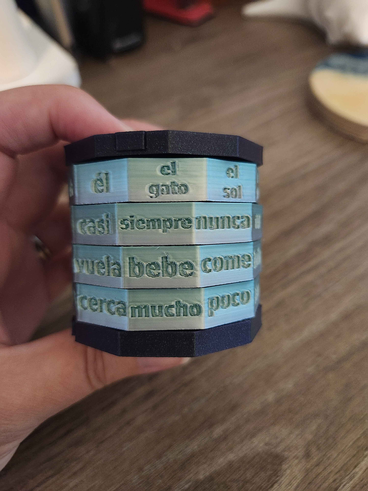
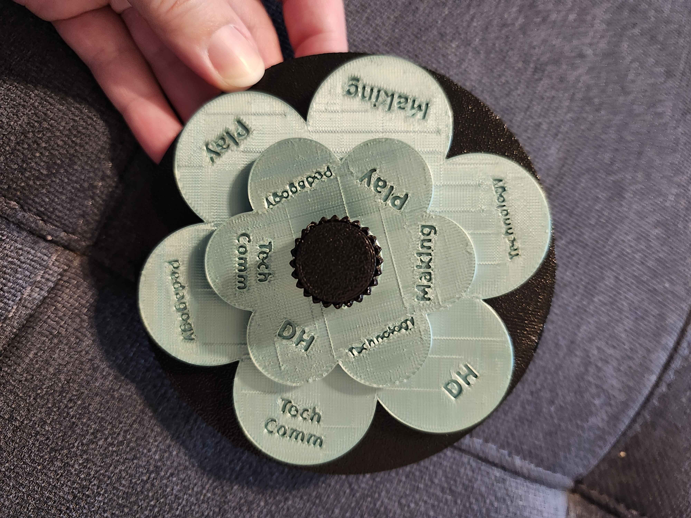

Talk Slides and Resources
Branching Out (AECT 2026)
Talk site for "Branching Out: Scaffolding GitHub Portfolios in Diverse Undergraduate Courses," built as a GitHub Pages site.
GitHub Sandbox
A failure-free, step-by-step simulation of forking a portfolio template and publishing it with GitHub Pages.
Unmaking
3D-printed remixes of my p5.js sketches, made with Claude: a Spanish word cryptex and a research-topic flower spinner, with downloadable files. See the projects.


Middle Passage VR Experience (MPE)

This virtual reality immersion project was developed by an interdisciplinary team: Dr. Yovanna Pineda (Associate Professor, History), Dr. Fon Gordon (Coordinator of Africana Studies and Associate Professor in History), Dr. Emily Johnson (Assistant Professor, Games and Interactive Media), and Dr. Amy Giroux (Associate Director, Center for Humanities and Digital Research).
For more information, visit the project's current site at yovannapineda.com/virtual-reality.
PEAR — Portable Education with Augmented Reality

PEAR is an early proof-of-concept built with students from UCF's Computer Science Capstone class. Designed to test what augmented reality can do for engaging and educating youth (roughly late elementary through early high school age), PEAR superimposes planets that players "gather" by tapping their phone screen. Gathering a planet unlocks a short video and a multiple-choice quiz about it; enough correct answers reveal the planet in full color and let the player place it in its correct spot in the solar system, superimposed on their real surroundings.

Computer Science Capstone Team
- Kenia Castro
- Richard DiBacco
- Matthew Frazier
- Katelyn Jones
Presentations
College of Engineering and Computer Science's Fall 2018 Senior Design Showcase.